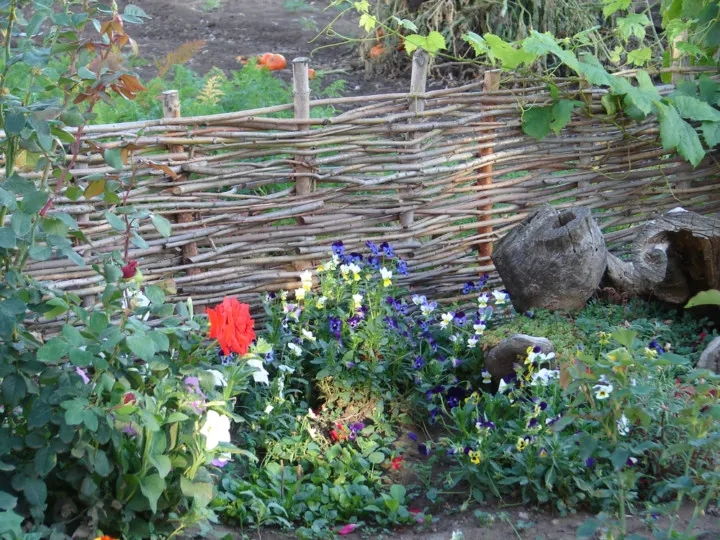

Wattle fence
Wattle Fence
Wattle is a very simple building technique that has been in use for at least 6,000 years.
Made from 100% wood, it requires no hardware or tools to make and relies wholly on tension to keep it upright and strong.
To make a wattle fence, you’ll need pieces of older, heavier wood as the posts. These are driven into the ground to a depth of a foot, each one to two feet apart. The closer they are together, the stronger your finished fence will be.
Weaver branches – young, green wood that is about 1 to 2 inches in diameter – are interwoven between the posts. The best wood for this is flexible branches, such as willow and hazel. Branches should be 4 to 6 feet long, or long enough to span at least three posts.